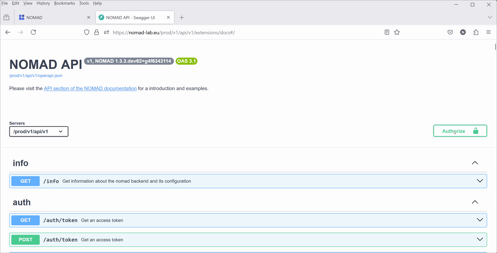

Authentication and Checking Uploads¶
Authentication¶
Most of the API operations with NOMAD can be freely used without needing a login or credentials. However, to upload, edit, or view your own data or those shared with you, the API needs to authenticate you.
The NOMAD API uses OAuth and tokens to authenticate users. This guide will walk you through the steps of getting access tokens, using the NOMAD Python package for authentication, and managing app tokens.
What is OAuth?
OAuth is an open standard for access delegation commonly used as a way to grant websites or applications limited access to user information without exposing passwords. It allows third-party services to exchange information securely and efficiently.
What are Tokens?
In general, tokens are pieces of data that are used to authorize access to an API. In the NOMAD API, tokens are also used to authenticate users. There are two main types of tokens: 1. Access Tokens: Short-lived tokens used for API requests. 2. App Tokens: Tokens with a user-defined expiration time, used for longer sessions.
Depending on what you want to do (e.g., uploading data) you may need to authenticate yourself using your username and password in the following use cases:
- Using the API dashboard
- Interacting with NOMAD API using Python.
- Working with the NOMAD Python package.
-
To use authentication in the API dashboard, simply use the Authorize button

-
When interacting with NOMAD using Python you need access tokens. You can obtain access tokens by sending a GET request to the NOMAD authentication endpoint (/auth/token', see the API dashboard). In the following example, we first obtain our access token from the
/auth/tokenendpoint, and use it later as aheaderparameter when sending other requests. Simply replace 'myname' and 'mypassword' with your actual username and password and run it.
import requests
import json
response = requests.get(
'https://nomad-lab.eu/prod/v1/api/v1/auth/token',
params=dict(username='myname', password='mypassword')
)
token = response.json()['access_token']
How to obtain ppp tokens in NOMAD
If the short-term expiration of the default access token (obtained from the /auth/token endpoint) does not suit your needs, you can request an app token with a user-defined expiration from the /auth/app_token endpoint:
- If you have the NOMAD Python package installed, you can use its
Authimplementation to directly authenticate yourself in the requests you send. Here is an example on how the username and password is given, when using theAuthe.g., to to see the user uploads:
import requests
from nomad.client import Auth
response = requests.get(
'https://nomad-lab.eu/prod/v1/api/v1/uploads',
auth=Auth(user='myname or email', password='mypassword')
)
uploads = response.json()['data']
Checking Uploads¶
Following example shows how you can check your uploads in NOMAD.
- Send a GET request to the
/auth/tokenendpoint and save your access token (see above). - Send a GET request to the
/uploadsendpoint contains your 'uploads' information. Let's print them!
import requests
import json
response = requests.get(
'https://nomad-lab.eu/prod/v1/api/v1/auth/token', params=dict(username='my_username', password='my_password'))
token = response.json()['access_token']
response = requests.get(
'https://nomad-lab.eu/prod/v1/api/v1/uploads',
headers={'Authorization': f'Bearer {token}'}
)
uploads = response.json()['data']
print(json.dumps(uploads, indent = 4))
The output of the above snippet should look like the following. It is a Python list with several elements (in this example only 1). Each element is a JSON (or Python dict) containing information about each of your uploads.
[
{
"process_running": false,
"current_process": "process_upload",
"process_status": "SUCCESS",
"last_status_message": "Process process_upload completed successfully",
"errors": [],
"warnings": [],
"complete_time": "2024-07-16T13:57:53.459000",
"upload_id": "VWGLXmy4S2-cdeteN2Xxaw",
"upload_name": "FAIRmat_logo.png",
"upload_create_time": "2024-07-16T13:57:53.308000",
"main_author": "ebb26223-0cec-4d81-98f5-3b25db945b54",
"coauthors": [],
"coauthor_groups": [],
"reviewers": [],
"reviewer_groups": [],
"writers": [
"ebb26223-0cec-4d81-98f5-3b25db945b54"
],
"writer_groups": [],
"viewers": [
"ebb26223-0cec-4d81-98f5-3b25db945b54"
],
"viewer_groups": [],
"published": false,
"published_to": [],
"with_embargo": false,
"embargo_length": 0,
"license": "CC BY 4.0",
"entries": 0,
"upload_files_server_path": "/nomad/prod/fs/staging/V/VWGLXmy4S2-cdeteN2Xxaw"
}
]
Next we will explore how we can use other API endpoints to create datasets and upload files.